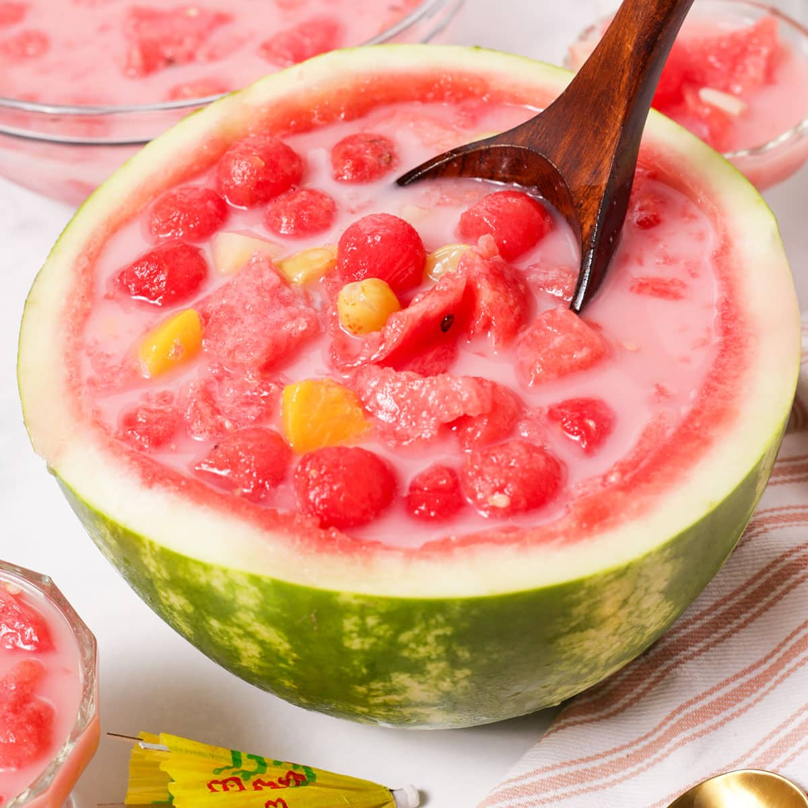

Subak-Hwachae

Delicious watermelon korean food punch dessert
Ingredients
- Watermelon
- Fruit cocktail in heavy syrup
- Lemon-lime soda (use Chilsung cider or Sprite)
- Milk
- Ice
Steps
- Scoop out the watermelon flesh into bite sized pieces using a spoon or a melon balller. Place the watermelon along with its juices into a large bowl
- To the bowl of watermelon, add the fruit cocktail along with the juices/syrup, the lemon-lime soda, milk and ice. Stir to combine
Storage Instructions
This Korean watermelon punch should be enjoyed within 2 to 3 days of making, but definitely best enjoyed freshly made and within a few hours of making. You'll taste the fizz from the soda the most when it's freshly made.
If storing, make sure to cover it well and keep refrigerated
Back to home
Return to top